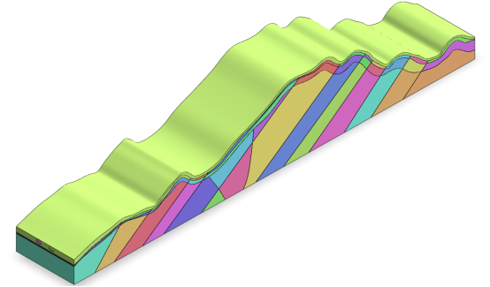
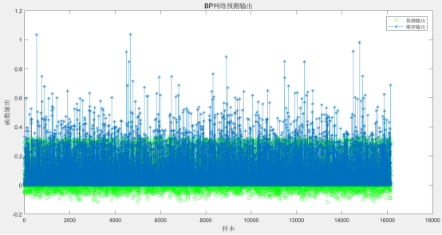
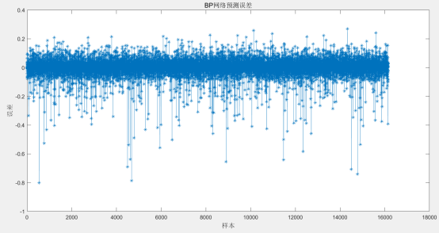

先锋顶隧道位于宜春市湖田镇里公塘村附近，隧道起于里公塘水库内侧冲沟，穿越山体终于斫洲里附近，为一座分离式隧道，其起止桩号为 ZK8+840～ZK10+108/YK8+830～YK10+110，隧道长度为 1268/1280 米，单幅隧道净空（宽×高）14.75*5 米。进口洞门形式拟采用端墙式，出洞口洞门形式拟采用端墙式，电力照明，机械通风，按照《公路隧道设计规范》第一册 土建工程（JTG 3370.1-2018）表 1.0.4 分级，该隧道属于公路长隧道。本次隧址区内岩性主要为炭质灰岩、变质石英砂岩、板岩、千枚状砂岩、千枚岩等。隧道入口段地层主要为残坡积层及炭质灰岩、灰岩夹页岩，为极破碎至破碎围岩。发育有断层泥，为土质碎石围岩，散体状结构。隧道洞身工程地质情况复杂，岩性主要以变质石英砂岩、板岩、千枚状砂岩、千枚岩、变质砂岩等，为破碎至较破碎，局部较完整岩体。洞身赋水丰富，隧址区内发育有裂隙密集带，在这些裂隙密集带中，为破碎岩体。隧道出口段地层主要为残积层及全强风化千枚状砂岩，为极破碎至破碎围岩，为类土质碎石围岩，散体状结构。隧道区岩体破碎，围岩等级低，隧道左幅：Ⅳ级围岩占53.78%，Ⅴ级围岩占46.22%。隧道右幅：Ⅳ级围岩占60.86%，Ⅴ级围岩占39.14%。隧道开挖方法为双侧壁导坑法。
依据施勘报告，隧道轮廓截面洞型取“五心圆+仰拱”型。根据经验，侧宽的分析范围取为距离隧道内轮廓边缘3~5倍隧道净宽的区域，深度的分析范围取为距离隧道内轮廓底部3~5倍隧道净高的区域。模型以反重力方向为Z方向正向，隧道延伸纵向为Y方向正向，隧道，根据右手螺旋定理，隧道径向为X方向。


图 2. 先锋顶隧道出口预测输出和期望输出图

图 3. 先锋顶隧道出口预测误差图
由图2可知，先锋顶隧道出口预测输出和期望输出结果基本吻合，走势基本一致。由图3可知预测数据和真实数据两者的误差基本在-0.2~0.2之间，误差范围较小，表明神经网络预测结果基本满足要求。